Style selector expands: creators pick a waveform or a graphic animation. Multi-select what you want to ship.
Graphic styles swap out the waveform entirely — the SVG animates between frames driven by audio amplitude.
Your SVG art — 2 frames = 1 style

Your two SVG frames animate with the beat — frame1 ↔ frame2 driven by audio amplitude.
Shown when audio is quiet / between beats.
Shown when audio amplitude crosses the beat threshold.
Additional graphic styles — suggested additions
Same SVG frames but tinted with the creator's chosen accent colour — personalised look.
SVG frames + a radial glow that pulses behind the graphic on each beat. Dramatic, neon feel.
Creators bring their own SVG frames — fully custom graphic style. Phase D+.